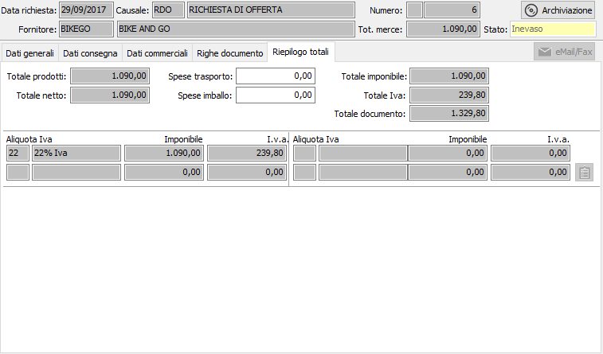

Riepilogo totali
L’ultima finestra video presenta i totali a valore della richiesta di offerta; vengono visualizzati l’importo dei prodotti ed il totale al netto degli sconti. È consentito, prima di determinare il totale imponibile, di impostare eventuali addebiti per spese di trasporto e spese d’imballo. Viene visualizzato il castelletto Iva con l'indicazione dei vari imponibili, le relative aliquote ed imposte calcolate, nel caso le aliquote IVA siano più di quelle visualizzate sarà presente un pulsante per visualizzare una finestra dove saranno mostrate tutti gli imponibili e le imposte relative fino ad un massimo di dieci.

SPESE TRASPORTO: campo numerico per l’eventuale inserimento di addebiti per spese di trasporto soggette ad Iva proporzionalmente alle aliquote presenti o ad aliquota fissa a seconda di quanto specificato in configurazione.
SPESE IMBALLO: campo numerico per l’eventuale inserimento di addebiti per spese di imballo soggette ad Iva proporzionalmente alle aliquote presenti o ad aliquota fissa a seconda di quanto specificato in configurazione.
Al termine dell'inserimento dei dati, quando viene premuto il tasto F10 oppure il pulsante Salva nella tool bar compare, se configurato, la finestra di conferma della registrazione.
In fase di inserimento, al termine della registrazione, viene richiesto se si deve effettuare la stampa diretta del documento.